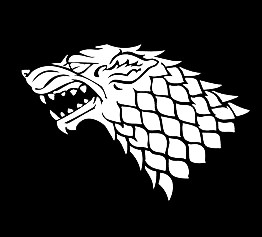
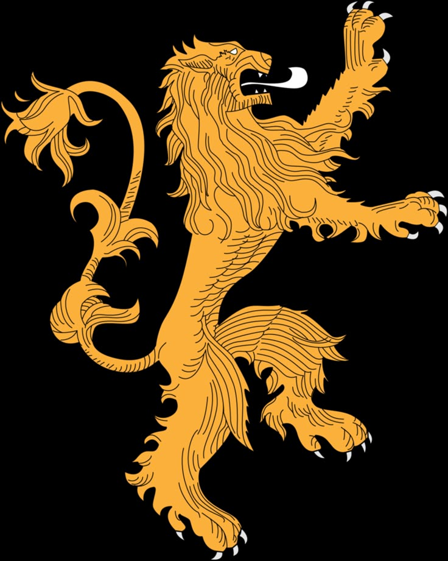

The Great Houses of Westeros
House Stark

House Stark is loyal, honorable, and built on a strong sense of duty.
They value family above all else and carry the weight of the North on their shoulders.
Eddard, Catelyn and Robb are some of its members.
House Stark's motto is: "Winter is Coming."
House Lannister

House Lannister is proud, ambitious, and unapologetically cunning.
They thrive on wealth, influence, and the power to bend others to their will.
Cersei, Jaime, Tyrion and Joffrey are some of its members.
House Lannister's motto is: "Hear Me Roar!"
House Targaryen

House Targaryen is fiery, proud, and defined by their dragons and ambition.
They are driven by a sense of destiny, often torn between greatness and destruction.
During the time the show is set in, the only living members are Daenerys and Viserys.
House Targaryen's motto is: "Fire and Blood."
House Baratheon

House Baratheon is bold, proud, and fiercely loyal, with a strong sense of honor and strength.
They are known for their courage in battle and their fiery temper.
Robert, Renly and Stannis are some of its members.
House Baratheon's motto is: "Ours Is the Fury."